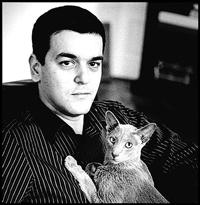

Joann Sfar
Biographie
Après un cursus philosophique (maîtrise à Nice), Joann Sfar a terminé sa formation à l'École nationale supérieure des beaux-arts de Paris, dans l'atelier de Pierre Carron. Ses cours de morphologie par Jean-François Debord l'influencent comme notamment dans Carnets.
Joann Sfar s'attaque à la bande dessinée par deux biais totalement différents mais simultanés : chez l'éditeur Delcourt, il est vu comme un scénariste, et son œuvre montre un goût du conte. Chez l'Association, il raconte des histoires moins convenues avec un trait bien à lui, apparemment désinvolte mais surtout soucieux de ne pas gâcher l'énergie de l'instant et de l'inspiration par la préoccupation de faire un « beau dessin ». Il se rapproche d'artistes du dessin de presse ou d'humour tels que Ronald Searle, Sempé, et peut-être plus que tout Quentin Blake, l'illustrateur des contes de Roald Dahl, qu'il admire. Par ailleurs, il se revendique comme un héritier de l'œuvre de Fred et d'Hugo Pratt.
Érudit, curieux des cultures et des idées, Joann Sfar a développé en une dizaine d'années seulement une œuvre abondante qui est parvenue à atteindre d'autres publics que celui de la BD traditionnelle.
Dilettante, il saute du coq à l'âne sans forcément achever les multiples séries qu'il installe, sans se fixer de calendriers ou se contraindre formellement, donnant l'impression d'une œuvre en roue libre, et dont la seule unité véritable est son auteur, qui livre ses préoccupations personnelles à son public et n'hésite pas à donner son avis sur de nombreux sujets : la virilité et la féminité, Dieu, l'art, la politique, l'histoire, la philosophie, la littérature, le cinéma, les cultures des pays qu'il visite ou dont il fréquente les ressortissants, la musique, etc.
Il a tenu une page hebdomadaire (Mon cahier d'éveil) dans Charlie Hebdo entre mi-2004 et septembre 2005.
Après la bande dessinée, le commentaire philosophique (Candide et Le Banquet, éditions Bréal) et le roman (L'Homme arbre), Joann Sfar s'est attaqué à un nouveau défi : l'écriture d'un scénario pour le cinéma.
Joann Sfar est également musicien, il joue notamment du ukulélé, comme son compère Lewis Trondheim. On raconte qu'il aurait converti Mathias Malzieu, chanteur du groupe Dionysos, avec lequel il a joué dans au moins un concert, au charme de l'ukulélé. Les deux hommes, amis proches, se sont d'ailleurs produits ensemble sur scène1. Sfar est également l'auteur de pochettes du groupe et du clip de la chanson Tes lacets sont des fées. Dans le domaine musical, il a aussi réalisé, avec Kerascoët, le clip Hyacinthe pour Thomas Fersen.
Joann Sfar s'est vu consacrer de nombreux portraits et dossiers dans les revues spécialisées (cf. le dossier dans 9e Art). Il a également obtenu de très nombreux prix et récompenses, comme le Prix du Trentenaire du Festival d'Angoulême, prix exceptionnel décerné en 2004.
source wikipedia
Bibliographie
- Contes et récits des héros du Moyen Âge avec Gilles Massardier
- Des animaux fantastiques avec Christophe Blain et Brigitte Coppin
- Donjon (35 tomes) avec Lewis Trondheim , Christophe Blain, Manu Larcenet, Kerascoët, Mazan, Jean-Christphe Menu, Andreas, Blanquet, Jean-Emmanuel Vermot Desroches, Yoann, Blutch, Carlos Nine, Killofer, Frédéric Bézian, Arnaud Moragues, Christophe Gaultier, Boulet, Obion, Stanislas et Nicolas Kéramidas
- Grand Vampire (6 tomes)
- Klezmer
- L'atroce abécédaire
- L'homme arbre (2 tomes)
- La fille du professeur avec Emmanuel Guibert
- La petite bibliothèque philosophique de Joann Sfar (2 tomes)
- La sorcière et la petite fille
- La ville des mauvais rêves avec David B.
- Le bestiaire amoureux (4 tomes)
- Le borgne gauchet
- Le chat du rabbin (5 tomes)
- Le minuscule mousquetaire (2 tomes)
- Le petit monde du golem
- Le petit prince, d'après l'œuvre d'Antoine de Saint-Exupéry
- Les aventures d'Ossour Hyrsidoux (2 tomes)
- Les carnets (9 tomes)
- Les olives noires (3 tomes) avec Emmanuel Guibert
- Les potamoks (3 tomes) avec José-Luis Munuera
- Merlin (4 tomes) avec José-Luis Munuera
- Monsieur Crocodile a beaucoup faim
- Noyé le poisson
- Orang-outang avec Sandrina Jardel
- Paris-Londres
- Pascin (7 tomes)
- Petit Vampire (7 tomes)
- Petrus Barbygère (2 tomes) avec Pierre Dubois
- Professeur Bell (5 tomes)
- Sardines de l'espace (8 tomes) avec Emmanuel Guibert
- Socrate le demi chien (2 tomes) avec Christophe Blain
- Troll (3 tomes) avec Jean-David Morvan et Olivier Boiscommun